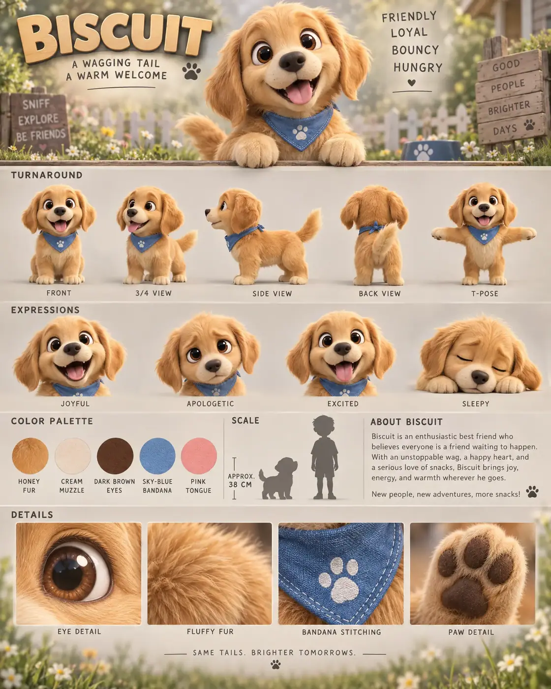

#02 of 100
Biscuit
Golden retriever puppy
Pets & FarmA WAGGING TAILA WARM WELCOME
- Species
- Golden retriever puppy
- Collection
- Pets & Farm
- Height
- 38 CM
- Personality
- FRIENDLYLOYALBOUNCYHUNGRY
- Colour palette
- HONEY FURCREAM MUZZLEDARK BROWN EYESSKY-BLUE BANDANAPINK TONGUE
- Expressions
- joyful open-mouth grin
- apologetic puppy eyes
- excited tongue-out smile
- sleepy head droop
- Detail panels
- EYE DETAIL
- FLUFFY FUR
- BANDANA STITCHING
- PAW DETAIL
- Character note
- Biscuit’s unstoppable friendship and love of snacks
Reference sheet prompt
Cute golden retriever puppy named BISCUIT, with oversized warm-brown eyes, floppy ears, fluffy golden fur, a round cream muzzle, a constantly wagging tail, and a tiny blue bandana around its neck. An enthusiastic best friend who greets everyone high-end 3D animated feature character reference sheet, original character design, portrait 4:5 presentation board, polished family-animation aesthetic, top-left header reading “BISCUIT” with the tagline “A WAGGING TAIL / A WARM WELCOME,” top-right traits reading “FRIENDLY / LOYAL / BOUNCY / HUNGRY” full-body turnaround — exactly five views: front / 3-4 / side / back / T-pose, identical floppy ears, bandana, fur markings, paws, and tail in every view, clean labels beneath each pose row of 4 facial expressions: joyful open-mouth grin, apologetic puppy eyes, excited tongue-out smile, sleepy head droop color palette swatches labeled HONEY FUR, CREAM MUZZLE, DARK BROWN EYES, SKY-BLUE BANDANA, PINK TONGUE soft warm-grey studio background with subtle sunny meadow and backyard habitat accents, faint grass, fence lines, and blurred wildflowers in the lower information sections, middle band with palette, puppy silhouette and human scale, approximate height “APPROX. 38 CM,” and a short bio about Biscuit’s unstoppable friendship and love of snacks bottom macro panels labeled EYE DETAIL, FLUFFY FUR, BANDANA STITCHING, PAW DETAIL 8k render, consistent chibi proportions, oversized rounded head, short legs, plush golden fur, soft contact shadows, clean editorial typography, no extra dogs, no logos, no illegible text